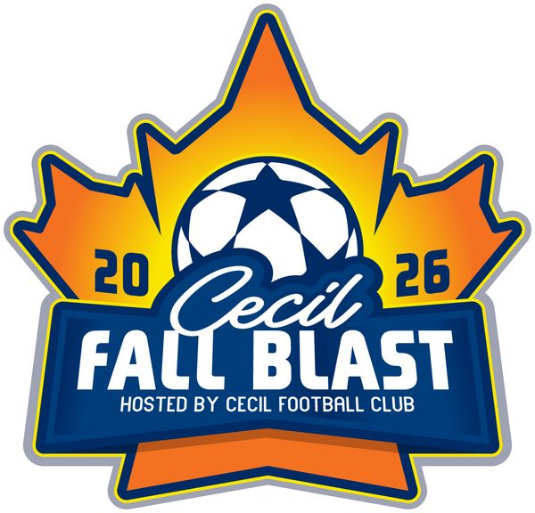
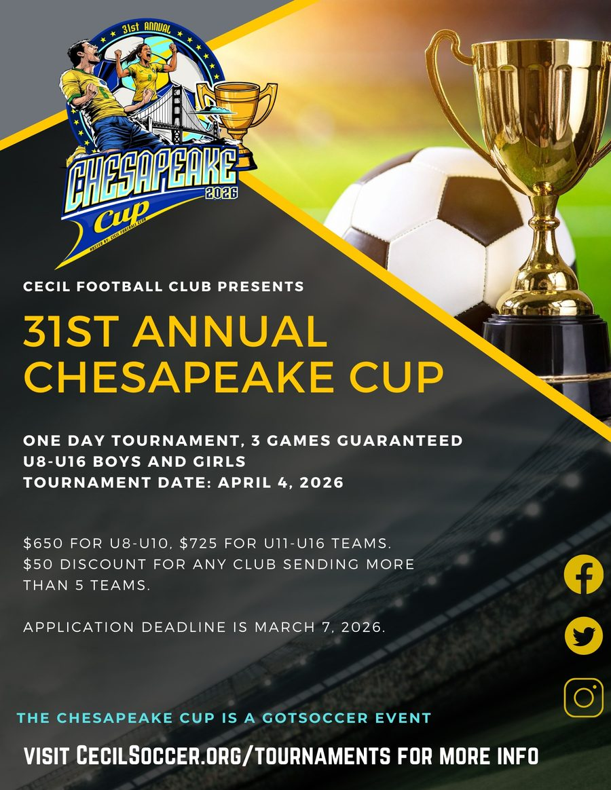

Application deadline October 26, 2026
18th Annual Cecil Fall Blast
- Dates
- November 14, 2026 (boys) · November 15, 2026 (girls)
- Format
- One-day tournament, three games guaranteed
- Age groups
- U8–U16 boys and girls (mixed teams accepted in boys divisions)
- Cost
- $650 (U8–U10) · $725 (U11–U16)
$50 per team discount for any club sending 5 teams - Small-sided
- U8–U10 play 7v7; U11–U12 play 9v9
The Tournament Committee reserves the right to combine age groups if appropriate.

Chesapeake Cup
Cecil FC’s spring tournament, now in its 31st year, is a one-day GotSport event with three games guaranteed for U8–U16 boys and girls teams. The 2026 Cup was played April 4, 2026.
- Cost (2026)
- $650 (U8–U10) · $725 (U11–U16)
$50 per team discount for any club sending 5 teams - Guest players
- Up to five per team, within the age group’s roster maximum
- Fields
- Chesland Soccer Complex and Bo Manor

Tournament contact
Questions about Cecil FC tournaments? Email info@cecilsoccer.org or call (410) 670-7347.